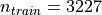
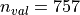

Deep learning for NeuroImaging in Python.
Note
Go to the end to download the full example code.
Presentation of the OpenBHB dataset and baseline models for age and sex predictions¶
This notebook introduces the OpenBHB dataset [1], a large-scale, multi-site brain MRI dataset. It is designed to perform benchmarking of machine learning and deep learning models on neuroimaging data.
We will demonstrate how to use OpenBHB for two important prediction tasks:
Age prediction
Sex classification
These serve as simple entry points for evaluating model performance and potential bias across imaging sites.
Load the packages¶
First, we need to load the packages to run this notebook:
Import packages
import matplotlib.pyplot as plt
import nibabel
import numpy as np
import pandas as pd
import seaborn as sns
from nilearn import datasets, plotting
from sklearn.linear_model import LogisticRegression, Ridge
from sklearn.metrics import (
accuracy_score,
r2_score,
)
from sklearn.pipeline import make_pipeline
from sklearn.preprocessing import StandardScaler
from nidl.datasets import OpenBHB
Load the OpenBHB dataset and plot the modalities¶
OpenBHB contains 6 modalities (or preprocessed data) of healthy subject anatomical brains. It contains  training images and  validation images. Demographic information about the subjects (age, sex) are available along with the details on the acquisition machines (magnetic field strength, acquisition setting).
dataset = OpenBHB(
root="/tmp/openBHB",
modality=(
"vbm",
"quasiraw",
"vbm_roi",
"fs_desikan_roi",
"fs_destrieux_roi",
"fs_xhemi",
),
target=["age", "sex", "site"],
)
Plot whole-brain Voxel-Based Morphometry (VBM) and Quasi-Raw images¶
Let’s take a look at the first subject in the dataset. We’ll visualize two different modalities:
VBM (Voxel-Based Morphometry): gray matter density maps computed using the CAT12 toolbox. VBM preprocessing involves tissue segmentation, normalization to MNI space, and modulation, resulting in voxel-wise maps that reflect local gray matter volume.
Quasi-Raw: T1-weighted MRI scans that have been preprocessed with basic steps like bias correction and skull stripping, but without spatial normalization or heavy smoothing. The goal is to retain as much of the anatomical detail of the original scan as possible, providing input that is close to raw data while still being in the same physical space across subjects.
all_mods, infos = dataset[0] # Get data from first subject
# VBM
img_vbm = all_mods["vbm"][0] # select the first (and only) channel
nii_img = nibabel.Nifti1Image(img_vbm, affine=np.eye(4))
print(img_vbm.shape)
plotting.plot_anat(nii_img, title=f"VBM image (infos={infos})")
# Quasi-Raw
img_quasiraw = all_mods["quasiraw"][0] # select the first (and only) channel
nii_img = nibabel.Nifti1Image(img_quasiraw, affine=np.eye(4))
plotting.plot_anat(nii_img, title=f"Quasi-Raw image (infos={infos})")
Plot VBM-ROI on the Neuromorphometrics atlas¶
In this visualization, we map regional gray matter volumes (VBM-ROI) onto a brain template using the Neuromorphometrics atlas**:
# - The VBM-ROI features are computed by averaging voxel-wise gray matter volumes
# within each of the **142 anatomical regions** defined in the atlas.
# - Each region corresponds to a gray matter structure, and volumes are
# extracted independently for each hemisphere.
# - The resulting brain map shows the **regional gray matter volume in
# milliliters (mL)**.
def map_roi_on_neuromorphometrics_atlas(roi_values, labels, atlas):
# Map ROI values on the Neuromorphometrics atlas
atlas_data = atlas["data"].get_fdata()
atlas_labels = atlas["labels"]
brain_map = np.zeros_like(atlas_data)
idx_mapping = {name: atlas_labels.index(name) for name in labels}
for idx, label in enumerate(labels):
brain_map[atlas_data == idx_mapping[label]] = roi_values[idx]
brain_map = nibabel.Nifti1Image(brain_map, affine=atlas["data"].affine)
return brain_map
# Step 1: Select regional gray matter volumes for the first subject
# first 142 ROI volumes (gray matter only)
vbm_roi = all_mods["vbm_roi"][0][:142]
# Step 2: Clean up ROI labels (remove '_GM_Vol' suffix)
labels = [
label.replace("_GM_Vol", "")
for label in dataset.get_vbm_roi_labels()[:142]
]
# Step 3: Load the Neuromorphometrics atlas used for mapping
atlas = dataset.get_neuromorphometrics_atlas()
# Step 4: Project the ROI values onto the brain volume using the atlas
brain_map = map_roi_on_neuromorphometrics_atlas(vbm_roi, labels, atlas)
# Step 5: Plot the resulting brain map
plotting.plot_stat_map(
brain_map,
title="Regional Gray Matter Volume (mL)",
cmap="plasma", # visually appealing sequential colormap
draw_cross=False,
colorbar=True,
)
Plot Surface-Based Measures from FreeSurfer¶
The OpenBHB dataset includes surface-based cortical measurements extracted using FreeSurfer, such as:
Cortical thickness
Surface area
Gray matter volume
Curvature
These measures are averaged over predefined regions from:
The Desikan-Killiany atlas (34 cortical regions per hemisphere)
The Destrieux atlas (74 cortical regions per hemisphere, excluding the medial wall)
Each value represents a regional summary of the surface geometry or morphology of the cortex. In addition, OpenBHB provides xhemi (cross-hemisphere) data computed on the fsaverage7 template (163842 vertices), which merges homologous regions across both hemispheres. This allows for analysis that reduces hemispheric asymmetries and improves statistical power by combining left and right hemisphere information.
In the following, we will define a small utility function to map these regional values onto the standard FreeSurfer surface (fsaverage5) for visualization of Desikan and Destrieux-based measures. For the xhemi data, which is computed on the higher-resolution fsaverage7 surface, visualization can be done similarly but requires using the corresponding fsaverage7 mesh files.
Visualize regional measures on the Destrieux atlas¶
We start by visualizing the regional measures based on the Destrieux atlas. The following function maps the regional values onto the fsaverage5 surface for visualization.
def map_freesurfer_destrieux_data(roi_values, labels, hemi="left"):
# Load Destrieux atlas
fsaverage = datasets.fetch_atlas_surf_destrieux(verbose=0)
fs_labels = [label.decode("utf-8") for label in fsaverage["labels"]]
map_hemi = fsaverage[f"map_{hemi}"]
# Map ROI values to vertex-wise data using the labels
idx_mapping = {name: fs_labels.index(name) for name in labels}
vertex_data = np.zeros_like(map_hemi, dtype=float)
for idx, roi_name in enumerate(labels):
vertex_data[map_hemi == idx_mapping[roi_name]] = roi_values[idx]
return vertex_data
# Load the correct channel index for the features
surface_area = dataset.get_fs_roi_feature_names().index("surface_area_mm^2")
volume = dataset.get_fs_roi_feature_names().index("gray_matter_volume_mm^3")
thickness = dataset.get_fs_roi_feature_names().index("average_thickness_mm")
curvature = dataset.get_fs_roi_feature_names().index(
"integrated_rectified_mean_curvature_mm^-1"
)
# Load the ROI data
labels = dataset.get_fs_labels(symmetric=True)
fs_surface = all_mods["fs_destrieux_roi"][surface_area]
fs_volume = all_mods["fs_destrieux_roi"][volume]
fs_thickness = all_mods["fs_destrieux_roi"][thickness]
fs_curv = all_mods["fs_destrieux_roi"][curvature]
# Map the ROI on the Destrieux surfacic atlas
surface_vertex = map_freesurfer_destrieux_data(fs_surface, labels)
volume_vertex = map_freesurfer_destrieux_data(fs_volume, labels)
thickness_vertex = map_freesurfer_destrieux_data(fs_thickness, labels)
curv_vertex = map_freesurfer_destrieux_data(fs_curv, labels)
# Prepare plots
data = [surface_vertex, volume_vertex, thickness_vertex, curv_vertex]
titles = [
"Surface area ($mm^2$)",
"GM volume ($mm^3$)",
"Cortical thickness ($mm$)",
"Mean curvature ($mm^{-1}$)",
]
fsaverage = datasets.fetch_surf_fsaverage(mesh="fsaverage5")
inflated_left = fsaverage["infl_left"]
sulc_left = fsaverage["sulc_left"]
fig, axes = plt.subplots(
1, 4, figsize=(12, 3), subplot_kw={"projection": "3d"}
)
# Plot each measurement
for ax, dat, title in zip(axes, data, titles):
plotting.plot_surf(
inflated_left,
surf_map=dat,
hemi="left",
view="lateral",
bg_map=sulc_left,
cmap="plasma",
colorbar=True,
axes=ax,
title=title,
figure=fig,
)
plt.subplots_adjust(wspace=0.25)
plt.show()
Visualize fine-grained measures on the fsaverage7 template¶
Next, we visualize more fine-grained FreeSurfer surface features on the left hemisphere using the higher-resolution fsaverage7 template:
lh.curv: Mean curvature map of the cortical surface, reflecting folding patterns (arbitrary unit, negative=sulci, positive=gyri).
lh.sulc: Sulcal depth map, indicating the depth of sulci (cortical folds), in millimiter.
lh.thickness: Cortical thickness values at each vertex (in millimiter).
# Load the correct channels for xhemi
thickness = dataset.get_fs_xhemi_feature_names().index("lh.thickness")
sulc = dataset.get_fs_xhemi_feature_names().index("lh.sulc")
curv = dataset.get_fs_xhemi_feature_names().index("lh.curv")
# Load the xhemi data
fs_thickness = all_mods["fs_xhemi"][thickness]
fs_sulc = all_mods["fs_xhemi"][sulc]
fs_curv = all_mods["fs_xhemi"][curv]
# Get fsaverage7 template
fsaverage = datasets.fetch_surf_fsaverage(mesh="fsaverage7")
infl_left = fsaverage["infl_left"]
sulc_left = fsaverage["sulc_left"]
# Prepare plots
data = [fs_thickness, fs_sulc, fs_curv]
titles = [
"Cortical thickness (in $mm$)",
"Sulcal depth (in $mm$)",
"Curvature",
]
fig, axes = plt.subplots(1, 3, figsize=(9, 4), subplot_kw={"projection": "3d"})
for ax, dat, title in zip(axes, data, titles):
plotting.plot_surf(
infl_left,
surf_map=dat,
hemi="left",
bg_map=sulc_left,
darkness=0.5,
cmap="plasma",
colorbar=True,
axes=ax,
title=title,
figure=fig,
)
Fit machine learning models for age and sex prediction¶
Now that we have explored the different modalities in OpenBHB, we will demonstrate how to use them to fit simple machine learning models on two standard benchmarking tasks: age prediction (regression) and sex classification. We will compare three representations of the brain:
the VBM-ROI features, which provides regional gray matter volumes based on the Neuromorphometrics atlas,
the Desikan-based SBM ROI features, which provide surface-based measures in 68 cortical regions,
the Destrieux-based SBM ROI features, which provide surface-based measures in 148 cortical regions.
We start by loading all the relevant datasets for these tasks:
modalities = ["vbm_roi", "fs_desikan_roi", "fs_destrieux_roi"]
modality_names = {
"vbm_roi": "VBM-Neuromorphometrics",
"fs_desikan_roi": "SBM-Desikan",
"fs_destrieux_roi": "SBM-Destrieux",
}
dataset_train = OpenBHB(
"/tmp/openBHB",
modality=modalities,
target=["age", "sex"],
split="train",
streaming=True,
)
dataset_val = OpenBHB(
"/tmp/openBHB",
modality=modalities,
target=["age", "sex"],
split="val",
streaming=True,
)
def extract_features_and_targets(dataset, modalities=modalities):
"""Extract features and target arrays from OpenBHB dataset."""
X, y_age, y_sex = {m: [] for m in modalities}, [], []
for x, y in dataset:
for m in modalities:
X[m].append(x[m].flatten())
y_age.append(y["age"])
y_sex.append(y["sex"])
return (
{m: np.array(x) for m, x in X.items()},
np.array(y_age),
np.array(y_sex),
)
X_train, y_train_age, y_train_sex = extract_features_and_targets(dataset_train)
X_test, y_test_age, y_test_sex = extract_features_and_targets(dataset_val)
print("Age range:", y_train_age.min(), "-", y_train_age.max())
print("Sex distribution:\n", pd.Series(y_train_sex).value_counts())
Age prediction with Ridge regression¶
We will use a Ridge regression model with standard scaling as a baseline for age prediction. We will evaluate the model using the R² score and visualize the predicted vs. true ages for the three modalities.
colors = {
"vbm_roi": "tab:blue",
"fs_desikan_roi": "tab:green",
"fs_destrieux_roi": "tab:orange",
}
fig, axes = plt.subplots(1, 3, figsize=(15, 5), sharex=True, sharey=True)
for ax, modality in zip(axes, modalities):
ridge_model = make_pipeline(StandardScaler(), Ridge(alpha=1.0))
ridge_model.fit(X_train[modality], y_train_age)
y_pred_age = ridge_model.predict(X_test[modality])
score = r2_score(y_test_age, y_pred_age)
sns.scatterplot(
x=y_test_age,
y=y_pred_age,
alpha=0.5,
edgecolor=None,
color=colors[modality],
ax=ax,
)
# Add reference line y=x
sns.lineplot(
x=y_test_age,
y=y_test_age,
color="red",
linestyle="--",
ax=ax,
)
ax.set_title(f"{modality_names[modality]}\nR²={score:.2f}")
ax.set_xlabel("True Age")
ax.set_ylabel("Predicted Age")
ax.grid(True)
plt.suptitle("Age Prediction with Ridge Regression", fontsize=14, y=1.02)
plt.tight_layout()
plt.show()
Sex classification with logistic regression¶
Next, we will use a logistic regression model with standard scaling as a baseline for sex classification. We will evaluate the model using accuracy.
accuracies = []
for modality in modalities:
logreg_model = make_pipeline(
StandardScaler(), LogisticRegression(max_iter=1000)
)
logreg_model.fit(X_train[modality], y_train_sex)
y_pred_sex = logreg_model.predict(X_test[modality])
acc = accuracy_score(y_test_sex, y_pred_sex)
accuracies.append(acc)
plt.figure(figsize=(6, 4))
sns.barplot(
x=[modality_names[m] for m in modalities],
y=accuracies,
palette=colors.values(),
)
plt.xlabel("Modality")
plt.ylabel("Accuracy")
plt.ylim(0, 1.0)
plt.title("Sex Classification with Logistic Regression")
# Add accuracy text above bars
for i, acc in enumerate(accuracies):
plt.text(i, acc + 0.02, f"{acc:.2f}", ha="center", fontsize=10)
plt.tight_layout()
plt.show()
Observations: the VBM representation gives the best results for both tasks, indicating that regional gray matter volumes are highly informative for predicting age and sex. Nevertheless, it would be interesting to check whether combining the modalities would improve the result, which would mean that they provide complementary information. This is left as an exercise to the reader.
Estimated memory usage: 0 MB
Follow us